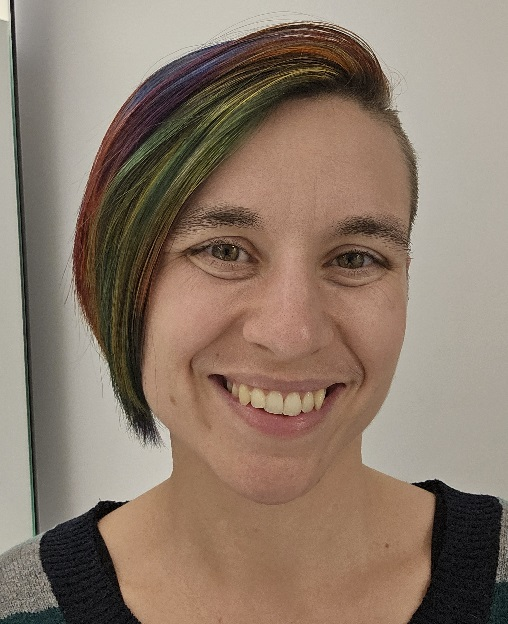
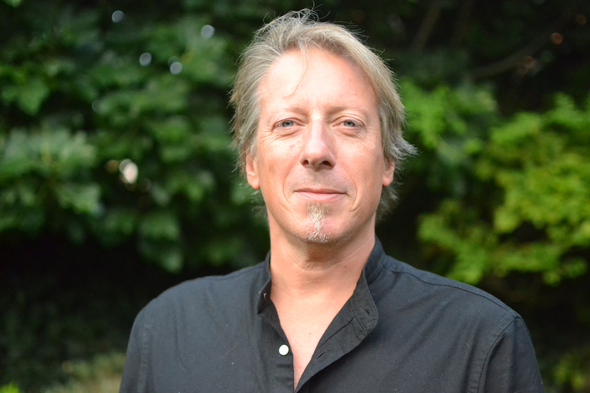
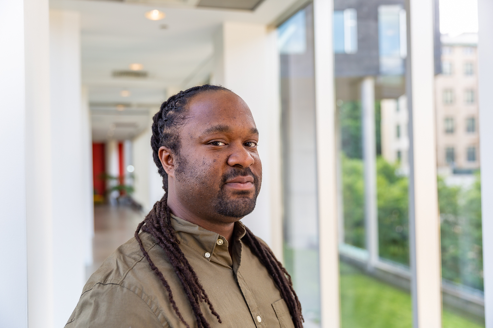
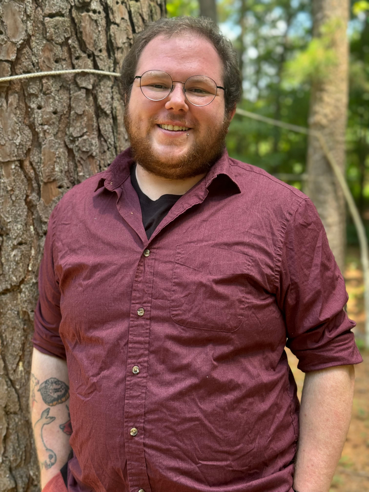
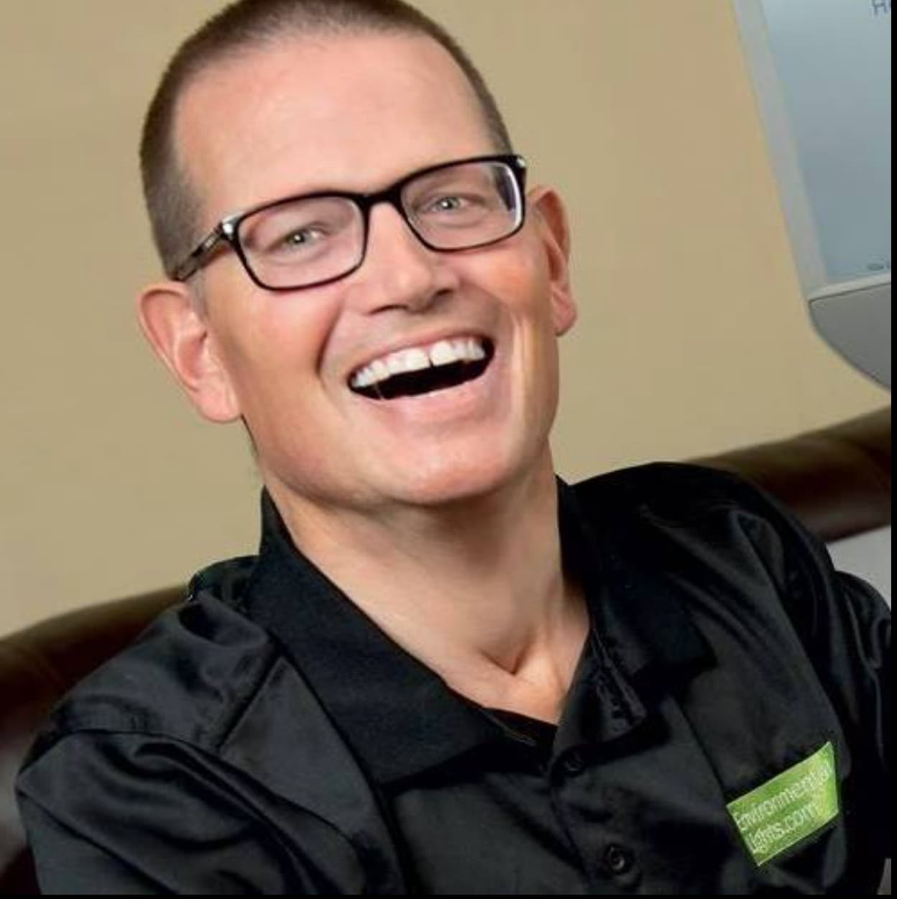
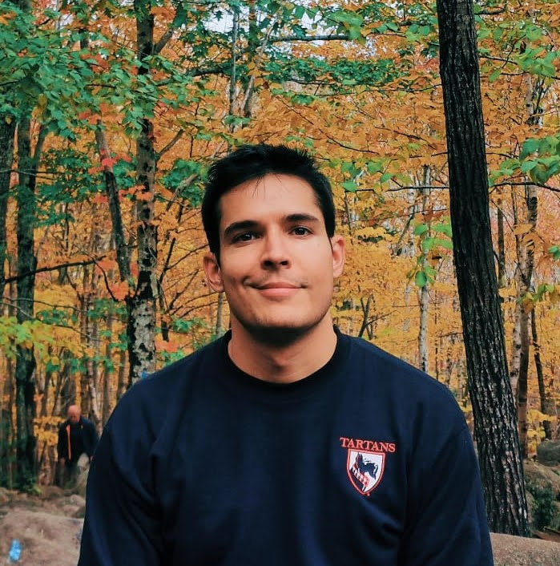
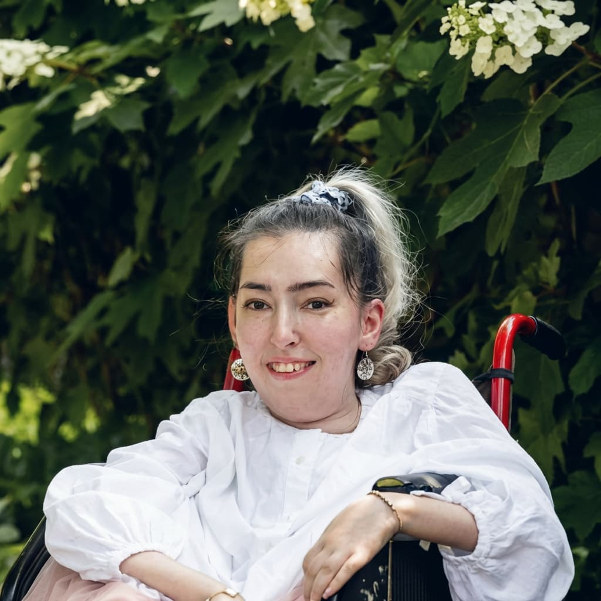
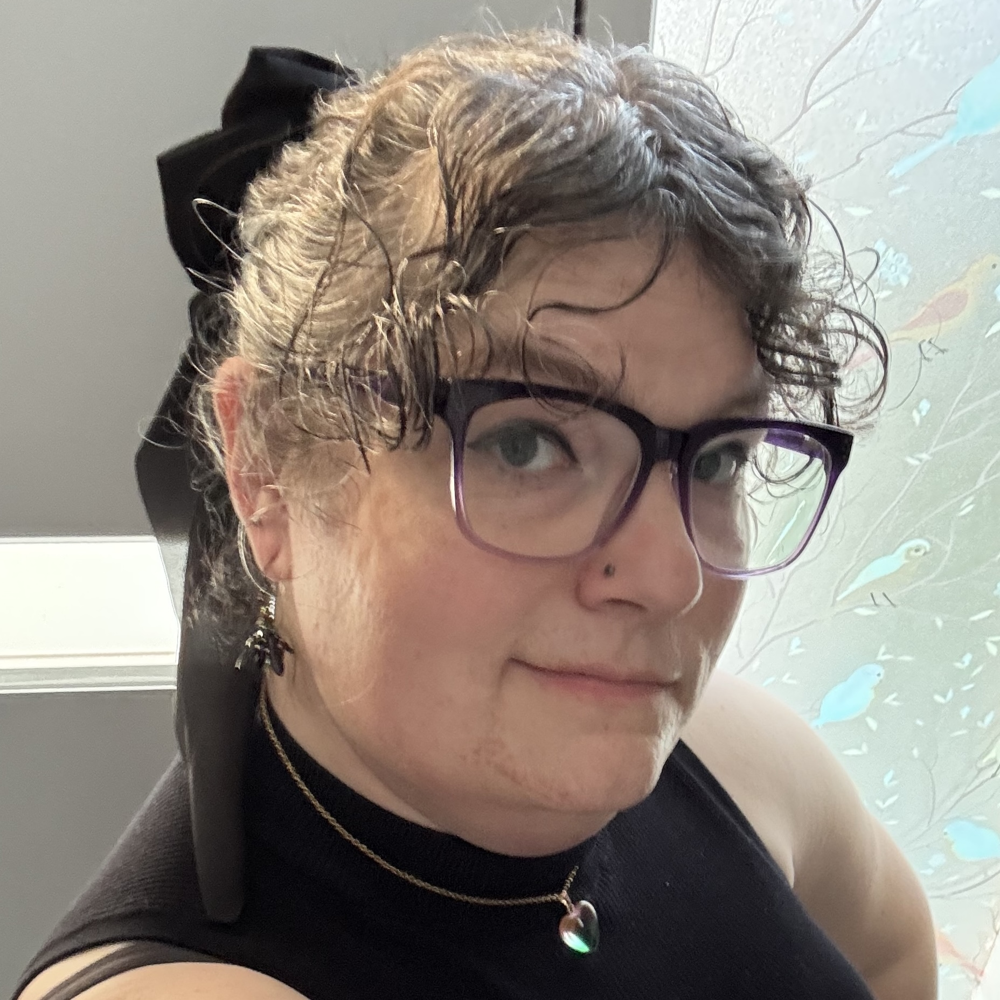
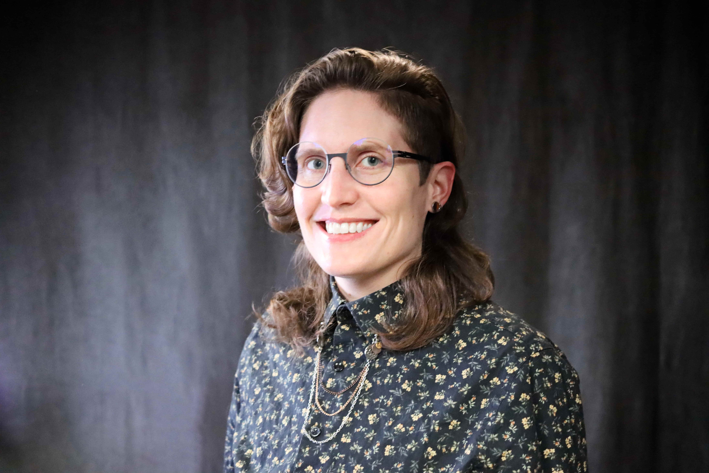

Robots for All brings together a rare combination of robotics researchers, accessibility specialists, and people with lived experience of disability — united by the goal of making robots work for everyone.
Core leadership
Our leadership combines deep expertise in robot usability research, accessibility, and product strategy.

Leads Robots for All with a research background in robot usability, including work with industry leaders and government-funded grants.
Specializes in robot accessibility, with hands-on experience conducting in-person design sessions to improve robot usability with people with disabilities.
Brings over a decade of combined industry experience in product research and strategy, connecting organizational goals with market and user needs.
Accessibility experts
Our accessibility experts bring firsthand research knowledge and lived experience of disability to every guideline and project we undertake.

Specializes in the development and evaluation of socially assistive and service robots, with expertise in multimodal interaction, situated AI, and human-centred design. Has extensive experience deploying robots in homes, care facilities, hospitals, and educational settings, with particular attention to linguistic and cultural diversity in European contexts.

Trained in human-computer interaction and accessibility, with 12+ years of research with people with mobility and vision disabilities. Work has focused on accessible sensing, mobile, and wearable systems, with more recent focus on AI applications for physical tasks and in physical spaces.

Works at the intersection of accessibility and robotics, developing codesign methods — including gamification and serious games — to centre the voices of people with diverse lived experiences in the design of embodied technologies.

Brings over 25 years of lived experience navigating mobility challenges and utilizing AAC and alternative computer access technologies. Co-founded Robots for Humanity and has been deeply involved in the development of home assistive robotics for over 15 years. A leading voice in assistive technology advocacy, he has given hundreds of talks and interviews worldwide.

Research combines human-robot interaction, accessibility, and design, with a focus on how technologies can support older adults' agency, social participation, and everyday values across different living contexts. Has worked on projects involving telepresence robots, assistive robotic systems, and AI agents in domestic, care, and public settings, examining how technology affects autonomy, dignity, family relationships, and inclusion.

Builds and deploys interactive systems — spanning VR, haptics, hands-free game controllers, and AI dialogue agents — that move beyond functional access to center disabled people's agency, pleasure, and identity. As a researcher with lived experience of spinal muscular atrophy, studies accessibility and identity safety in generative AI, assistive technology, and LLM assistants.

Research centres on designing for transgender inclusivity, creating games and software systems that prioritize joy in gender expression. Her work has established design principles for inclusive computing, drawing on HCI, game design, and agent awareness.

Assistant Professor at Purdue University, where they teach technology design and ethics. As PI of the CoLiberation Lab, they study the impacts of technology and policy on disabled people's access to bodily autonomy and meaningful public life. Their research explores how transformations in research design — including meaningful participation and accessibility in study protocols — influence inquiry, findings, and outcomes.
Brings 25+ years of expertise in digital and web accessibility and user testing with people with disabilities. Has conducted large-scale studies (100+ participants) on accessible technology including US currency and digital talking book players, and conducted early research into vehicle accessibility for blind users. Currently researching AI applications for web accessibility.
Friends & Supporters
We are grateful for the encouragement and support of leading researchers in the field of robot accessibility.
A renowned robot accessibility researcher whose work advances our understanding of how robots can be designed to interact with people of all abilities.
Keep exploring
Learn more about how Robots for All works and how to get involved.